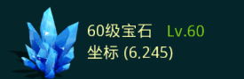

Coordinate for District 401
原理
收集坐标的过程分为两步：
1) 获取原始信息
在Android模拟器上运行游戏，再通过自动化工具遍历每个矿的坐标，如果坐标为矿，则将其对应的信息截图，例如： 
2) 分析并提取信息
有了原始矿标的截图信息后，利用OCR技术，提取图中的数字和文字信息。这一步主要通过search_mine.sh脚本完成。
漏报说明：
由于截图和图像识别的不稳定等因素，这里列出的坐标难免会有遗漏。漏报包括以下方面：
- 截图误差 - 由于网络不稳定，导致一些图没有截下来。或者，在截图中产生的一些系统信息导致截图模糊，也会影响识别的效果。
- OCR识别准确度 - 在对数字识别时，有时会将6识别成5，将8识别成3，在观察了一部分样本后，脚本最大可能的修正了数据。
坐标数据
我们只关心58级以上矿的坐标，以下链接列出的匀是58级以上的矿标。坐标x每10个区间存一个文件，如下0-9代表x为0至9所有的坐标。文件中的一行代表矿的x坐标，y坐标，level级别，type类型（iron:铁, cu:铜, oil:油, si:硅, gem:宝石）